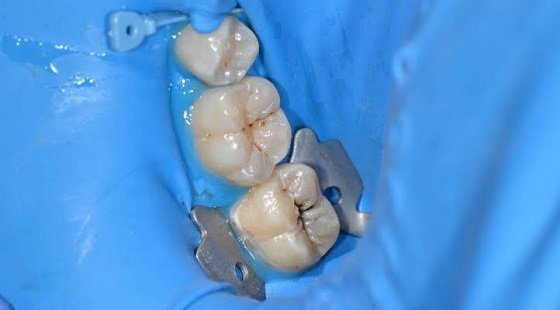
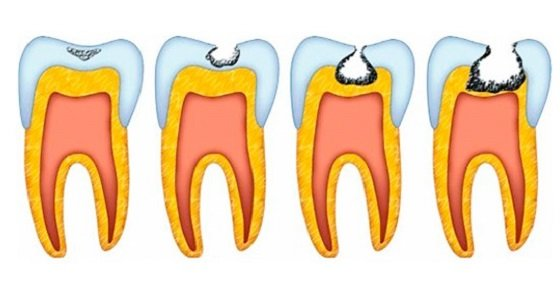

Самое распространенное заболевание зубов – кариес. В переводе с латинского это слово означает «гниение».Кариес – это болезнь, характеризующаяся постепенным разрушением тканей зубов (эмали или дентина) вследствие чего образуются кариозные полости. Но самым важным является то, что кариес – это пусковой механизм для поражения нервов зуба и распространение воспаления через каналы зуба в кость. Это может привести к таким серьезным заболеваниям, как периодонтит, периостит и др. заболевания.. Как распознать кариес?
Причины кариеса.
Чем опасен кариес, если его не лечить?
Он сопровождается сильной болью. При отсутствии адекватного лечения воспаление принимает гнойный характер, пульпа отмирает, ткани зуба перестают получать питание из внутри. Если процесс носит разлитой характер, говорят о периодонтите. А при формировании гнойной полости у корней устанавливается диагноз периодонтального абцесса. При периодонтите может происходить разрушение костной ткани с разрастанием грануляций и образованием среди них полости. В последующем тут возникает радикулярная (расположенная у корня) киста челюсти. Она чаще всего бывает заполнена гноем. При выявлении такого состояния врач проводит пункцию и при необходимости иссекает кисту. Лечение.Соответствующий метод лечения кариеса выбирается стоматологом только после диагностики зубов и полости рта, и он зависит от степени развития заболевания.Задачей лечения служит удаление разрушенного дентина или эмали, восстановление работы зуба посредством разнообразных пломбировочных материалов.Для лечения кариеса врачами СФ «Скорпион» применяются современные материалы и инструменты.Правильный уход за зубами и своевременное лечение помогут вам избежать развития осложнений, таких, как пульпит, периодонтит, гранулема и т.д. |